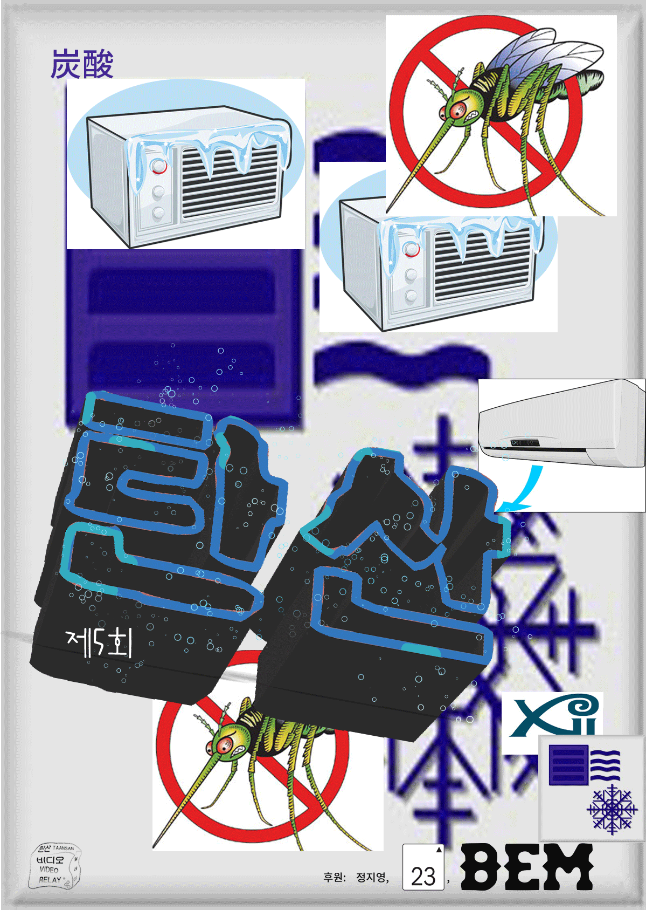

- 2016. 8. 16. 20:00
- 23층
- 김다움 Daum Kim
- 김다움은 현대인 간에 발생하는 다양한 인터페이스를 본다. 그 안에서 파생되는 다양한 흔적, 감각의 오류와 기억의 왜곡 등이 시간을 지나 어떤 ‘상태’를 이룰 때, 그에 관해 이야기 하는 일에 관심이 있다.
- 상영 목록
- <유년기의 끝 Childhood’s End>, 4'30'', 2009
- 아서 C. 클라크의 소설 ‘유년기의 끝’의 마지막 장을 영상으로 ‘번역’해보았다.
- <리카 Rika>, 8'18'', 2010
- 사주로 궁합을 봐주는 스마트폰 앱 ‘궁합’에서 만난 ‘리카 Rika’와의 대화로 만든 영상작업.
- <정일 Jong-il>, 16'50'', 2012
- 북한은 2011년 12월 19일 김정일 사망 소식을 공식 발표했다. <정일 Jong-il>은 공식발표 전후 1시간 동안 모은 약 30,000건의 트윗으로 만든 작품이다.
- <상호간접 Mutually Mediated>, 10', 2013
- 상호간접은 전시장이라는 인터페이스에 간접적으로 남겨진 흔적을 모아 재구성한 영상이다.
- <마리 Marie>, 4'53'', 2014
- ‘마리'라는 이름으로 개명한 지인을 모티브로 만든 작업. DJ인 마리는 다른 음악가가 만든 곡을 믹싱(Mixing)해 자신만의 노래를 만든다. 이는 마리라는 한 개인이 자기 삶의 조건과 반응하는 모습을 닮았다.
- <신기루의 시간 Mirage Time>, 13'43'', 2015
- 그동안 관심을 가졌던 전시공간의 평면도(Floor Plan)에 대한 고민을 확장한 영상. <신기루의 시간>은 기획자들의 경험과 기억을 토대로 아직 만들어지지 않은 것들에 대하여 인터뷰를 하고, 이를 시각적인 방식으로 담아낸다.